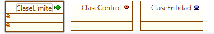
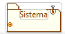

|
Perfil Analista de Sistemas |
|
Este
perfil representa a las personas encargadas de investigar, analizar,
planear, coordinar y recomendar soluciones que se adecuen a los
problemas de la organización o problemas a los cuales se enfrenta un
proyecto de software, desde un punto de vista sistémico.
El perfil de Analista de Sistemas puede ser identificado en los diagramas de clases, donde se aplican tres etiquetas:
 Figura 1. Etiquetas de clases para perfil de Analista de Sistemas El perfil tambien es aplicable al diagrama de sistemas, como se muestra en la Figura 2.
 Figura 2. Etiqueta de sistemas para perfil de Analista de Sistemas |